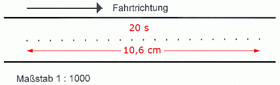
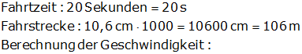
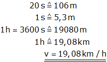
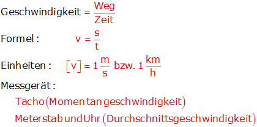
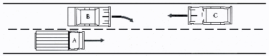
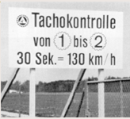
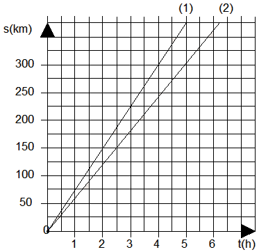
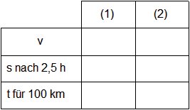
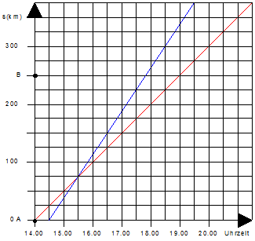
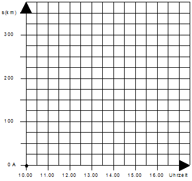

|
1. Bestimmung der Geschwindigkeit |
| |
|

Ein Auto verliert in jeder Sekunde
einen Tropfen Öl.
Miss die Entfernungen zwischen den
Punkten und
trage in die Tabelle ein!
|
|

 |
| |
|
Zeit |
Weg |
Geschwindigkeit |
|
1 s |
5,3 m |
19,08 km/h |
|
2 s |
10,6 m |
19,08 km/h |
|
3 s |
15,9 m |
19,08 km/h |
|
4 s |
21,2 m |
19,08 km/h |
|
5 s |
26,5 m |
19,08 km/h |
|
6 s |
31,8 m |
19,08 km/h |
|
7 s |
37,1 m |
19,08 km/h |
|
8 s |
42,4 m |
19,08 km/h |
|
9 s |
47,7 m |
19,08 km/h |
|
10 s |
53,0 m |
19,08 km/h |
|
 |
| |
|
| |
|
2. Aufgaben |
| 1) Fahrzeug B
überholt leichtsinnig den Lastwagen A. Wie sollen sich die
Fahrer verhalten? |
 |
|
 |
|
Streiche das Falsche durch! |
Der Fahrer in Fahrzeug A beschleunigt / gibt Gas / bremst /
geht vom Gaspedal weg / fährt gleich schnell weiter /
verzögert.
Der Fahrer in Fahrzeug B
bremst / gibt Gas / verzögert / geht vom Gaspedal weg /
beschleunigt / fährt gleich schnell weiter.
Der Fahrer in Fahrzeug C beschleunigt / gibt Gas / bremst /
geht vom Gaspedal weg / fährt gleich schnell weiter /
verzögert. |
|
2) Ergänze folgende Tabelle: |
|
|
|
2,5 km |
= |
m |
|
2,5 h |
= |
min |
| |
150 s |
= |
min |
|
2,5 h |
= |
s |
| |
18 s |
= |
min |
|
1 km/h |
= |
m/s |
| |
400 m |
= |
km |
|
72
km/h |
= |
m/s |
| |
2 min |
= |
s |
|
162
km/h |
= |
m/s |
| |
1 h |
= |
s |
|
60 m/s |
= |
km/h |
| |
0,075
km |
= |
m |
|
144
m/s |
= |
km/h |
| |
0,1
min |
= |
s |
|
25 m/s |
= |
km/h |
|
|
3) Ermittle die fehlenden Werte: |
|
| |
s |
30 m |
|
18 km |
60 km |
0,4 km |
800 km |
| |
t |
4 s |
12 s |
2,5 h |
|
20 s |
|
| |
v |
|
3 m/s |
|
15 km/h |
|
160 km/h |
|
|
|
4) Ermittle die Geschwindigkeit
aus dem Weg-Zeit-Diagramm! |
|
|
|
|
5) |
 |
Auf den
Autobahnen stehen in Abständen von jeweils 500 m Schilder
mit Kilometerangaben.
Vom fahrenden Auto aus
beobachtet jemand, daß 500 m jeweils in genau 15 s
zurückgelegt werden.
Mit welcher
Geschwindigkeit fährt das Auto? |
|
6) |
|
Ein Motorrad legt in
einer Zeitspanne von 0,5 s eine Strecke von 20 m zurück.
Berechne seine Durchschnittsgeschwindigkeit in m/s und km/h. |
|
7) |
|
Welche
Durchschnittsgeschwindigkeit erreicht ein D-Zug, der um 9.04
Uhr in Düsseldorf abfährt
und pünktlich um
12.35 Uhr im 264 km entfernten Frankfurt am Main ankommt? |
|
8) |
|
Ein Lastkraftwagen fährt
auf der Autobahn von Köln nach Lüttich in Belgien.
Die Fahrstrecke beträgt 142 km, die gesamte Fahrt dauert von
8.00 Uhr bis 11.15 Uhr. |
a) Berechne die
Durchschnittsgeschwindigkeit des Lastwagens.
b) Die Entfernung von Köln
zur belgischen Grenze beträgt 76 km. Kannst Du angeben,
um welche Uhrzeit der Lastwagen dort ankommt? |
|
9) |
|
Ein Lastwagen mit
einer Länge von 15 m will mit einer Geschwindigkeit von 72
km/h
einen vor ihm fahrenden Schwertransporter
überholen. Zum Aus- und Einscheren benötigt
er
eine Strecke von je 80 m. Der Schwertransporter hat eine
Länge von 25 m und fährt
mit 36 km/h. |
a) Welche Zeit ist zum
Überholen notwendig?
b) Welchen Weg legt der
Lastwagen dabei zurück? |
|
10) |
|
Zwei Schnecken
bewegen sich gleichförmig in einem Garten: Die erste
Schnecke bewegt sich
mit 1 mm/s; die zweite in 2
Sekunden um 4 mm, bleibt dann aber plötzlich stehen. Wenn
die
erste Schnecke die zweite überholt, verdoppelt
sie ihre Geschwindigkeit, während die zweite
mit
der halben Anfangsgeschwindigkeit weiterkriecht. |
|
a) Zeichne ein gemeinsames
s-t-Diagramm! (x-Achse: 1 cm = 1 s; y-Achse: 1 cm = 1 mm) |
b) Stelle die Abhängigkeit von
Geschwindigkeit und Zeit für beide Bewegungen in einem
Koordinatensystem dar! (x-Achse: 1 cm = 1 s; y-Achse: 1 cm =
0,5 mm/s) |
|
11) |
|
In der Schweiz findet man am Straßenrand
gelegentlich ein Schild, wie nachfolgende Abbildung
es zeigt. Versuche zu erklären, wie die Tachoanzeige dort
überprüft werden kann. |
|
|
 |
|
12) Ermittle aus der Zeichnung die gesuchten Größen! |
|
|

 |
13) Mit Hilfe der Algebra oder der zeichnerischen
Darstellung kann man zunächst schwierig
erscheinende Aufgaben leicht lösen. In der folgenden Aufgabe
startet Fahrer1 in Ort A
um 14 Uhr mit einer Durchschnittsgeschwindigkeit von 50 km/h
und Fahrer2 um 14.30 Uhr
mit 75 km/h vom selben Ort. |
|
|
 |
|
a) |
Nach wieviel Stunden
und um wieviel Uhr
hat der zweite Fahrer
den ersten eingeholt? |
|
b) |
Nach wieviel
Kilometern hat der zweite Fahrer
den
ersten eingeholt? |
|
c) |
Um
wieviel Uhr kommen beide Fahrer in
Ort B
an? |
|
|
14) Fahrer1 startet um 10 Uhr mit einer
Durchschnittsgeschwindigkeit von 60 km/h in Ort A.
Der zweite Fahrer startet eine Stunde später vom gleichen
Ort mit 100 km/h.
Ort B
liegt 240 km von Ort A entfernt. Ermittle die Lösung mit
Hilfe der zeichnerischen
Darstellung und prüfe die Ergebnisse rechnerisch nach! |
|
|
 |
|
a) |
Nach wieviel
Stunden und um wieviel Uhr
hat der zweite
Fahrer den ersten eingeholt? |
|
b) |
Nach wieviel
Kilometern hat der zweite Fahrer
den ersten
eingeholt? |
|
c) |
Um wieviel Uhr
kommen beide Fahrer in
Ort B an? |
|
|
15) Ein Pkw-Fahrer fährt eine Strecke von 200 km. Die erste
Hälfte der Strecke fährt er mit einer
Geschwindigkeit von 80 km/h, die zweite Hälfte mit 100 km/h.
Ermittle die Fahrzeit! |
|
|
16) |
|
Ein Radfahrer fährt um 9 Uhr
von seinem Heimatort A ab. Er legt in 1 Stunde 10 km zurück.
1 1/2 Stunden später fährt ihm ein Motorradfahrer mit einer
Geschwindigkeit 40 km/h nach. |
|
a) Nach wieviel Stunden und um
wieviel Uhr hat der Motorradfahrer den Radfahrer eingeholt? |
|
b) Nach wieviel Kilometern hat der
zweite Fahrer den ersten eingeholt? |
|
17) |
|
Zwei Radfahrer, die 54 km
voneinander entfernt wohnen, brechen gleichzeitig um 8 Uhr
auf
und fahren einander
entgegen. Der erste Radfahrer würde für den ganzen Weg 4 1/2
Stunden,
der zweite 3 3/5
Stunden benötigen. |
|
a) Wann treffen sich die beiden
Radfahrer? |
|
b) Wieviel km hat jeder
zurückgelegt? |
|
c) Wie groß ist die
Geschwindigkeit in km/h? |
18) Bei einem Wettlauf gibt ein Läufer, der die 800
m-Strecke in 2 : 24 Min. durchläuft, einem
anderen, der die Strecke in 2 : 48 Min durchläuft, 50 m
Vorsprung. Wird der erste Läufer
auf der 800 m-Strecke den anderen überholen? |
|
19) Bei einer 4 x 100 m-Staffel hatte nach dem letzten
Stabwechsel der Läufer der Mannschaft A
einen Vorsprung von 12 m vor dem Läufer der Mannschaft B.
Die letzten 100 m durchlief der
Läufer der Mannschaft A in 13,8 Sekunden, der Läufer der
Mannschaft B in 12,6 Sekunden.
Welche Mannschaft siegte? |
|
20) Ein Radfahrer fährt um 8.00 Uhr von A nach dem 30 km
entfernt liegenden Ort B. Er macht
dort 1 Stunde Rast und fährt von B um 1.30 Uhr mit derselben
Geschwindigkeit nach dem
20 km entfernt liegenden C weiter. Wann kommt er in C an? |
|
|
21) |
|
Ein Radfahrer fährt um 8.00
Uhr von A nach dem 20 km entfernt liegenden Ort B. Seine
Geschwindigkeit beträgt 15 km/h. Nachdem er in B 30 Minuten
gerastet hat, fährt er mit
derselben Geschwindigkeit nach dem 30 km entfernt liegenden
C weiter. |
a)
Um 9.30 Uhr fährt ein Auto mit einer Geschwindigkeit von 60
km/h von A nach C.
Wann und wo überholt das Auto den Radfahrer? |
b) Um 10.00 Uhr fährt ein
Motorradfahrer von C nach A. Seine Geschwindigkeit beträgt
50 km/h.
Wann und wo begegnen sich 1) Motorradfahrer und Radfahrer,
2) Motorradfahrer und Auto? |
|
22) |
|
Köln ist von Stuttgart 360 km
entfernt. Um 7.00 Uhr fährt ein Lastwagen mit einer
Geschwindigkeit von 80 km/h ab Köln in Richtung Stuttgart,
um 8.00 Uhr folgt ein
Personenwagen mit 120 km/h. Um 8.30 Uhr fährt ein Sportwagen
mit 160 km/h
in gleicher
Richtung ab Köln. |
|
a) Wann treffen die drei
Fahrzeuge in Stuttgart ein? |
|
b) Wann überholen sich die
Fahrzeuge und wie weit sind sie dann noch von Stuttgart
entfernt? |